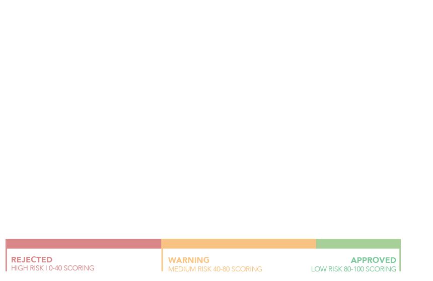
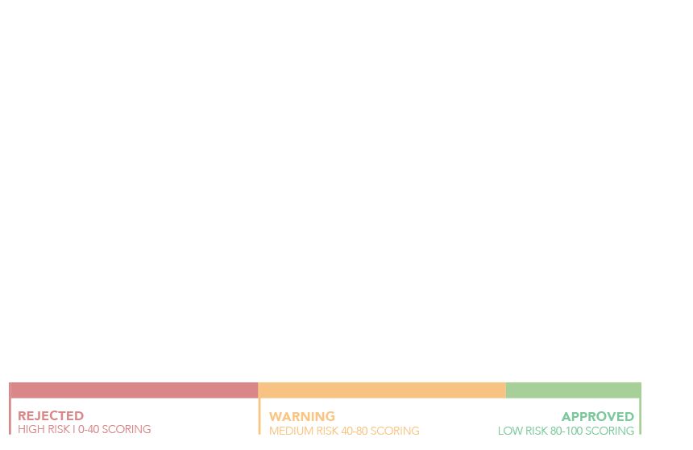
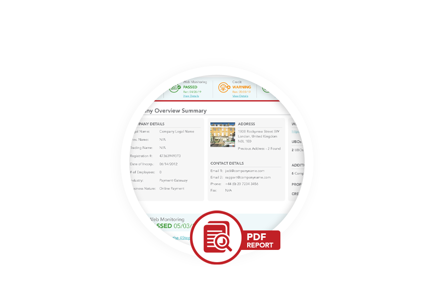
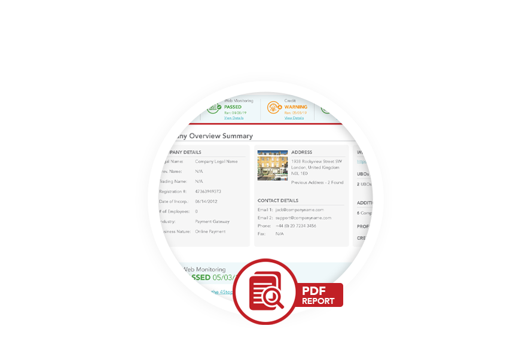

Seamlessly onboard your merchants with trust and confidence.
Investigate Merchants Online Presence
Real-Time Results In Minutes.
Advanced mirroring technology investigates your merchants' online presence in near real-time through open source intelligence. Within 7 minutes you’ll receive a thorough assessment regarding their overall website presence with clear risk indicators flagged with score ratings and recommendations outlined to ensure optimal review process.
 


An Array Of Website Analysis Investigation Tools.
MONEY LAUNDERING
DETECTION
Through a myriad of methods we identify and classify all websites that may not have been communicated, but are connected to the merchant. Allowing you to uncover any transaction laundering risks within these website(s) relations.
Merchant Location
Determination
The report includes granular details to verify the business registered address, VAT, director location, contact details, server location, licensing area, currency, audience and governing law.
Compliance Sanctions &
PEP Screening
Ensure you do not unknowingly conduct business with sanctioned individuals or organisations by performing real-time global sanction checks across FATF, OFAC, AML/CTF, PEP, RCA, SIP and adverse media lists on a daily, weekly or monthly basis.
Category Code
Detection
Detect merchants category code and identify the industry in which they operate within to mitigate any risk if the merchant operates within a high-risk framework so you can make a quantifiable decision to onboard them through further due-diligence.
Deceptive Traffic
Detection
Through the website analysis performance and content risk evaluation, you'll know when a merchant may be utilising deceptive marketing to push their products or services, if there are any content violations present and if website compliance is adhered to.
Historical Website
Data Analysis
Receive detailed information on merchants website presence going back more than 5 years including overall website presence scoring, engagement sources, user traffic, content violations, enforced website compliance and server and IP information.
Predictive Risk
Analysis
Through the systems risk engine combined with historical website data analysis, you will receive a dynamic calculation of the probability for future violations regarding content, adhered compliance, transaction laundering, chargeback rates and much more.
Enhanced Underwriting
Risk Analysis
Expand your research by utilizing an underwriting representative that will further assess all content violations, merchant websites, background research activities, website compliance, virtual office(s) and payment processing pages, all within 36 hours.
Keep A Positive
Portfolio On-Going
At any point during your relationship with your onboard merchant, you can perform dynamic daily, weekly or monthly underwriting analysis. Allowing you to ensure that your merchants' website presence and engagement remains positive for your business.


Enhanced Director
Due Diligence
With Real-Time KYC.
Expand your research into a business director by enabling and performing real-time KYC verifications. With an array of global KYC data sources available and a simple step-by-step activation process within minutes, you can enhance your underwriting for each active director of the business and obtain further trust and confidence in your decision to onboard them as a merchant.
Fully Automated KYC
Effortlessly activate, deploy and perform any of the global KYC data sources available in an automated and real-time manner. Alongside numerous automated system actions including instant blacklist from first verification point, streamlining your risk mitigation processes.
World-Wide Coverage
We've integrated hundreds of KYC data sources to provide true worldwide coverage and optimal enriched data experience. Allowing you to confidently process your KYC for compliance and due diligence regardless of the global region and make quantifiable decisions.
Step-by-Step Activation
Our KYC Data Source Hub has been designed to ensure absolute ease in setting up and managing your KYC verifications. Through a simple-to-use interface, you'll be guided through the activation process and enable KYC to exactly your requirements.
Cascading Logic
Through the systems real-time cascading waterfall verification logic you can perform KYC in exactly the tiered format and processing order you choose. Ensuring that every verification is performed in the most cost-efficient manner possible to maximise onboarding.
Real-Time Deployment
Enhance your underwriting in minutes with real-time results. Our KYC data hub is fully automated and can deploy your KYC required, alongside associated risk rules all in real-time, at a specific time or through our time-frame logic with real-time results.
Detailed Director KYC Reports
Review all director specific KYC verifications performed along with their full in-depth profile, risk score and verification data results. These reports are readily available from within the merchant underwriting specific investigation profile interface.


Underwriting Analysis
With Global View Of Business Checks.
Through a dynamic customisable dashboard and a KYB specific queue hub, you can view and manage all activated KYB investigation reports with their associated data performance output. Paired with the ability to easily activate in real-time additional KYB required.
Quick Summaries of Status
Through the KYB queue instantly view merchant underwriting high-level reports indicating the ones that are presenting low to high risk to streamline your review.
Step-By-Step Activation
We make it as easy as possible to begin your KYB by guiding you through the entire process from initial activation through to running the investigation.
Real-Time Intelligence
Easily view current and historical underwriting data including; all verifications performed with holistic and data source specific associated data performance output, overall risk exposure analysis, underwriting reports and much more.
Simple and Clear Risk Flags
and Recommendations.
Stay organised and streamline your underwriting review process. From a singular merchant specific profile interface, you can easily view and manage all underwriting reporting documentation from website analysis, enhanced KYC on directors, site history output, case files and more.


 

All Your Merchants Underwriting Files
In One Place.
Stay organised and streamline your underwriting review process. From a singular merchant specific profile interface, you can easily access deep-dive reports on all underwriting reporting documentation from website analysis, enhanced KYC on directors, site history output, case files and more.
- Clear indicators of threats and risks
- Clear risk resolution recommendations
- View website analysis reports
- View case file research reports
- View director(s) KYC profile and verifications
4Stop is dedicated to supporting your merchant onboarding in the most streamlined and efficient manner possible. To learn more about our solution and to schedule a personalised 1:1 demo please contact a representative today at sales@4stop.com for more information.